from typing import Dict, List, Tuple
import empyrical as ep
import matplotlib.pyplot as plt
import numpy as np
import pandas as pd
from SignalMaker.qrs import QRSCreator
from src import (calc_signal_bins_corr, concat_ohlc_vs_signal,
concat_signal_vs_forward_returns)
from src.plotting import (displot_signal, displot_signal_vs_forward_returns,
plot_cumulative_return)
# 中文显示
plt.rcParams['font.sans-serif'] = ['SimHei']
plt.rcParams['axes.unicode_minus'] = False
d:\anaconda3\envs\qlib_env\lib\site-packages\pyfolio\pos.py:26: UserWarning: Module "zipline.assets" not found; mutltipliers will not be applied to position notionals.
warnings.warn(
信号构建#
信号并非用支撑位与阻力位作突破或反转交易的阈值，而是更关注市场参与者们对于阻力位与支撑位的定位一致性。因此一个简单想法是利用类似\(\frac{\delta(high)}{\delta(low)}\)的值来描述支撑位与阻力位的相对强度，即最低价每变动 1 的时候，最高价变动的幅度。实际上， \(\frac{\delta(high)}{\delta(low)}\)是连接高低价格平面上的两点 (low[0], high[0]) 与 (low[1], high[1]) 的斜率。由于市场量价本身噪音的存在，仅计算两点得到的斜率数据包含了太多的噪音。我们考虑通过最近 N 个 (low, high) 的数据点来得到信噪相对较高的最高最低价相对变化程度。 使用线性回归，建立如下般最高价与最低价之间的线性模型： $\(hight_{t}=\alpha+\beta*low_{t}+\epsilon\)$
式中拟合出的\(\beta\)值即是用以刻画支撑与阻力强度对比的代理指标，表明最近一段时期， 最低价每波动 1 个点位，最高价相应会波动\(\beta\)个点位。因此，\(\beta\)越大，表明支撑强度相 比阻力强度越显著，市场越容易上行，牛市中大概率对应后市加速上涨的走势，熊市中 则对应后市止跌企稳的走势；同理，\(\beta\)越小，表明阻力相对支撑的强度更甚，在牛市中 可能预示着即将见顶，在熊市中则对应后市大概率加速深跌。
QRS指标的构建中信号项(signal)部分：\(zscore(\beta)\)，惩罚项(Regulation)部分\(R^{2}\) 。实际上在普通线性回归里，\(\beta\)有简单的解析解：\(\beta = \frac{std(y)}{std(x)} ∗ 𝑐𝑜𝑟𝑟(y, x)\)；而 \(R^{2}\)则 为：\(R^{2} = corr(y, x)^{2}\) 。由此我们可以发现，整个指标实际上可以仅由三个简单数据决定： 最高价序列的波动率、最低价序列的波动率、最高级与最低价的相关系数。而原始指标 值可以转写为：
其中 y 是最高价序列，x 是最低价序列。
# 读取数据
daily: pd.DataFrame = pd.read_parquet("data/daily.parquet")
pivot_table: pd.DataFrame = pd.pivot_table(
daily, index="trade_date", columns="code", values=["high", "low","open","close"]
)
high_df: pd.DataFrame = pivot_table["high"]
low_df: pd.DataFrame = pivot_table["low"]
close_df:pd.DataFrame = pivot_table["close"]
# t日信号,t+1日买入,则t日收益为(t+2/t+1)-1,所有shift=-8
forward_returns:pd.DataFrame = close_df.pct_change(10).shift(-8)
# 数据中的标的
daily['code'].unique().tolist()
['000016.SH', '000852.SH', '000905.SH', '000001.SH', '000300.SH', '000985.CSI']
检查历史上不同β值下指数后续的预期收益率。以N=18计算的β为例，我们以 0.01 为 间隔将历史β值划分成不同子样本，计算每个子样本内β值对应的沪深300、中证500等指数10日后收益率的均值，作为该β取值范围对应的未来指数预期收益率。
qrs:QRSCreator = QRSCreator(low_df, high_df)
signal_df:pd.DataFrame = qrs.fit(18,600)
displot_signal(qrs.beta);
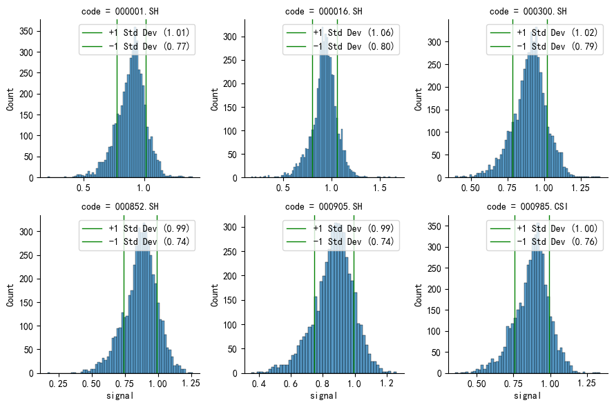
signal_and_forward_return: pd.DataFrame = concat_signal_vs_forward_returns(
qrs.beta, forward_returns
)
# 只统计区间样本数量大于5个的区间
displot_signal_vs_forward_returns(signal_and_forward_return, step=0.01, threshold=5);
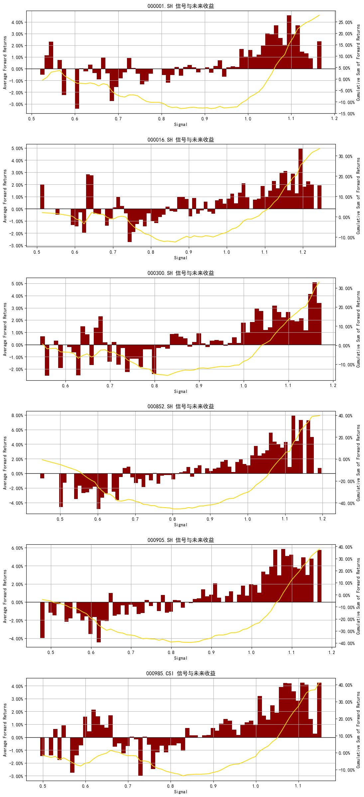
β取值与沪深 300 指数 10 天后预期收益率的相关系数为0.56(研报中为0.25)。如果考虑到有些β的取值区间内样本数太少，我们可以只统计样本数量至少为5个的取值区间。在限定了样本数量后，β取值与沪深 300 指数 10 天后预期收益率的相关系数为0.57(研报中为0.63)。
# 各个指数与未来10日收益的相关系数
calc_signal_bins_corr(signal_and_forward_return, step=0.01)
code
000001.SH 0.633761
000016.SH 0.611353
000300.SH 0.701592
000852.SH 0.853993
000905.SH 0.871730
000985.CSI 0.660092
dtype: float64
# 各个指数与未来10日收益的相关系数(排除区间样本低于5的)
calc_signal_bins_corr(signal_and_forward_return, step=0.01, threshold=5)
code
000001.SH 0.563629
000016.SH 0.358544
000300.SH 0.489586
000852.SH 0.807594
000905.SH 0.700619
000985.CSI 0.663143
dtype: float64
在确认了构建的技术指标有一定预测涨跌的能力之后，为了能利用它来构建量化择时策略，我们接下来还需要明确定义，指标值多大才算大，多小才算小。因此，需要对指标 值进行标准化处理。标准化处理的方式一般有两种，正态标准化或分位数。从效果上来说，这两种方式都能达到标准化目的，效果大同小异。
本例中将采取正态标准化计算β的 z_score 值，标准化后能得到更加直观的指标值大小。 同时需要意识到，在用线性回归模型计算β时，无论最高价与最低价序列是否有较好的 线性关系，都能得到一个β值。但当最高价与最低价并无明显线性关系的时候，线性回 归模型的有效性假设得不到满足，此时计算出的\(\beta\)值实际上是一个并无法有效表征择时 逻辑的噪音值，如果这样的噪音被当作择时信号，那么技术指标的有效性就会大打折扣。 因此我们希望在指标中加入一个惩罚机制，使得大部分的噪音指标能被过滤掉。在本次 个例中，β值的有效性与线性回归拟合效果有明显正相关，因此可以用回归模型的决定系数\(R^{2}\)刻画技术指标的有效性。
利用 QRS 指标构建择时策略，测试其择时能力。择时模型策略为
计算 QRS 指标值；
若指标值向上穿过开仓阈值 S，则买入持有；
若指标值向下穿过平仓阈值-S，则卖出平仓；
其余时候维持仓位不变。
我们选取（N=18, M=600, S=0.7）作为模型参数
from backtrader_utils.bt_template import run_template_strategy
from strategy.rsrs_strategy import RSRSStrategy
from src.performance import multi_asset_show_perf_stats,multi_strategy_show_trade_stats
ohlc_and_signal:pd.DataFrame = concat_ohlc_vs_signal(daily,signal_df)
ohlc_and_signal['upperbound'] = 0.7
ohlc_and_signal['lowerbound'] = -0.7
multi_asset_dict: Dict = {
code: run_template_strategy(
ohlc_and_signal,
code,
RSRSStrategy,
strategy_kwargs={"verbose": False, "hold_num": 1},
)
for code in ohlc_and_signal['code'].unique()
}
2024-10-29 16:42:03.474 | INFO | backtrader_utils.engine:load_data:119 - 开始加载数据...
2024-10-29 16:42:03.483 | SUCCESS | backtrader_utils.engine:load_data:134 - 数据加载完毕！
2024-10-29 16:42:03.900 | INFO | backtrader_utils.engine:load_data:119 - 开始加载数据...
2024-10-29 16:42:03.908 | SUCCESS | backtrader_utils.engine:load_data:134 - 数据加载完毕！
2024-10-29 16:42:04.394 | INFO | backtrader_utils.engine:load_data:119 - 开始加载数据...
2024-10-29 16:42:04.402 | SUCCESS | backtrader_utils.engine:load_data:134 - 数据加载完毕！
2024-10-29 16:42:04.816 | INFO | backtrader_utils.engine:load_data:119 - 开始加载数据...
2024-10-29 16:42:04.826 | SUCCESS | backtrader_utils.engine:load_data:134 - 数据加载完毕！
2024-10-29 16:42:05.245 | INFO | backtrader_utils.engine:load_data:119 - 开始加载数据...
2024-10-29 16:42:05.253 | SUCCESS | backtrader_utils.engine:load_data:134 - 数据加载完毕！
2024-10-29 16:42:05.666 | INFO | backtrader_utils.engine:load_data:119 - 开始加载数据...
2024-10-29 16:42:05.674 | SUCCESS | backtrader_utils.engine:load_data:134 - 数据加载完毕！
for code, strat in multi_asset_dict.items():
plot_cumulative_return(
strat,
ohlc_and_signal.query("code==@code")["close"],
title=f"{code} RSRSStrategy",
)
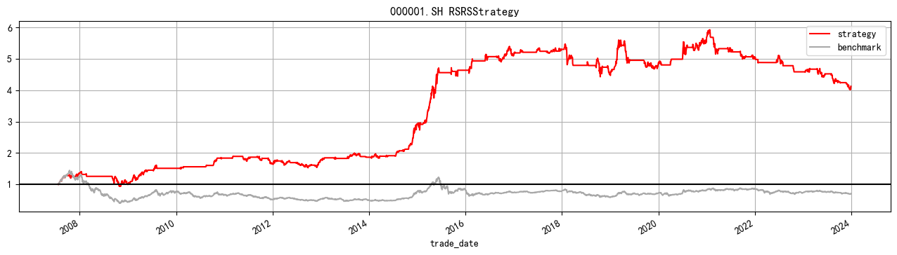
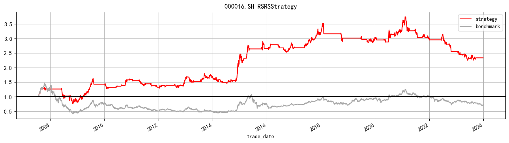
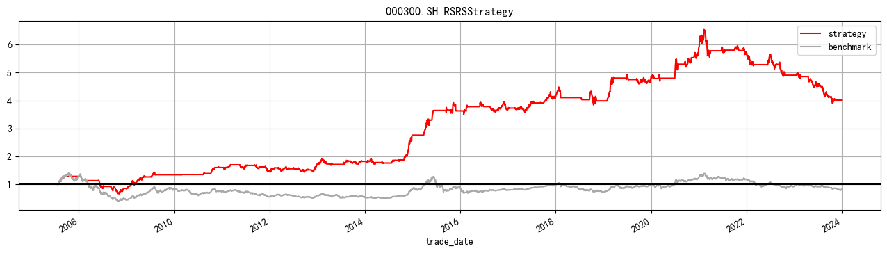
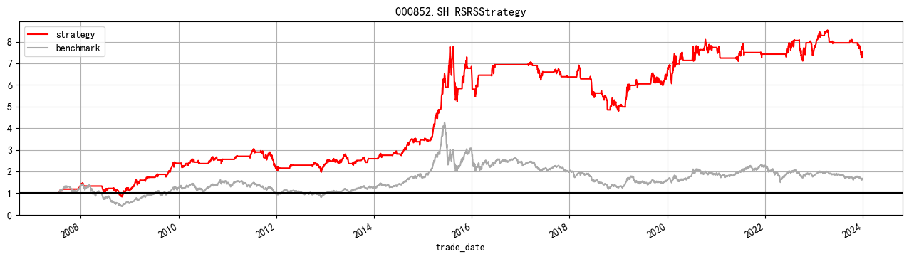
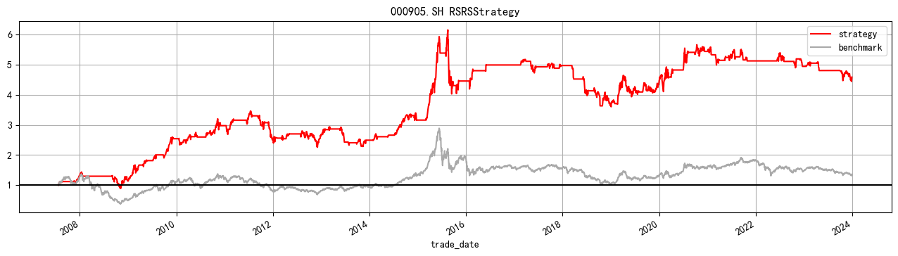
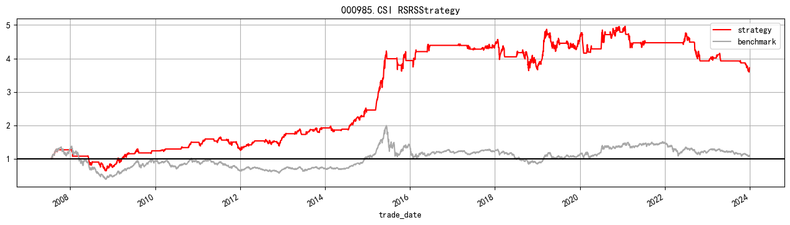
multi_asset_show_perf_stats(multi_asset_dict,ohlc_and_signal)
d:\anaconda3\envs\qlib_env\lib\site-packages\pyfolio\timeseries.py:724: FutureWarning: The default dtype for empty Series will be 'object' instead of 'float64' in a future version. Specify a dtype explicitly to silence this warning.
stats = pd.Series()
d:\anaconda3\envs\qlib_env\lib\site-packages\pyfolio\plotting.py:648: FutureWarning: iteritems is deprecated and will be removed in a future version. Use .items instead.
for stat, value in perf_stats[column].iteritems():
d:\anaconda3\envs\qlib_env\lib\site-packages\pyfolio\timeseries.py:724: FutureWarning: The default dtype for empty Series will be 'object' instead of 'float64' in a future version. Specify a dtype explicitly to silence this warning.
stats = pd.Series()
d:\anaconda3\envs\qlib_env\lib\site-packages\pyfolio\plotting.py:648: FutureWarning: iteritems is deprecated and will be removed in a future version. Use .items instead.
for stat, value in perf_stats[column].iteritems():
d:\anaconda3\envs\qlib_env\lib\site-packages\pyfolio\timeseries.py:724: FutureWarning: The default dtype for empty Series will be 'object' instead of 'float64' in a future version. Specify a dtype explicitly to silence this warning.
stats = pd.Series()
d:\anaconda3\envs\qlib_env\lib\site-packages\pyfolio\plotting.py:648: FutureWarning: iteritems is deprecated and will be removed in a future version. Use .items instead.
for stat, value in perf_stats[column].iteritems():
d:\anaconda3\envs\qlib_env\lib\site-packages\pyfolio\timeseries.py:724: FutureWarning: The default dtype for empty Series will be 'object' instead of 'float64' in a future version. Specify a dtype explicitly to silence this warning.
stats = pd.Series()
d:\anaconda3\envs\qlib_env\lib\site-packages\pyfolio\plotting.py:648: FutureWarning: iteritems is deprecated and will be removed in a future version. Use .items instead.
for stat, value in perf_stats[column].iteritems():
d:\anaconda3\envs\qlib_env\lib\site-packages\pyfolio\timeseries.py:724: FutureWarning: The default dtype for empty Series will be 'object' instead of 'float64' in a future version. Specify a dtype explicitly to silence this warning.
stats = pd.Series()
d:\anaconda3\envs\qlib_env\lib\site-packages\pyfolio\plotting.py:648: FutureWarning: iteritems is deprecated and will be removed in a future version. Use .items instead.
for stat, value in perf_stats[column].iteritems():
d:\anaconda3\envs\qlib_env\lib\site-packages\pyfolio\timeseries.py:724: FutureWarning: The default dtype for empty Series will be 'object' instead of 'float64' in a future version. Specify a dtype explicitly to silence this warning.
stats = pd.Series()
d:\anaconda3\envs\qlib_env\lib\site-packages\pyfolio\plotting.py:648: FutureWarning: iteritems is deprecated and will be removed in a future version. Use .items instead.
for stat, value in perf_stats[column].iteritems():
| 000001.SH | 000016.SH | 000300.SH | 000852.SH | 000905.SH | 000985.CSI | |
|---|---|---|---|---|---|---|
| Backtest | Backtest | Backtest | Backtest | Backtest | Backtest | |
| Annual return | 9.3% | 5.5% | 9.2% | 13.6% | 10.1% | 8.6% |
| Cumulative returns | 312.9% | 133.7% | 301.8% | 655.9% | 359.1% | 272.1% |
| Annual volatility | 15.0% | 17.2% | 16.4% | 21.1% | 19.7% | 17.3% |
| Sharpe ratio | 0.672028 | 0.396981 | 0.616707 | 0.709758 | 0.58667 | 0.565063 |
| Calmar ratio | 0.278231 | 0.128166 | 0.188604 | 0.311494 | 0.24318 | 0.171835 |
| Stability | 0.809051 | 0.757938 | 0.894658 | 0.86628 | 0.750806 | 0.829811 |
| Max drawdown | -33.6% | -42.9% | -48.6% | -43.6% | -41.4% | -50.2% |
| Omega ratio | 1.199244 | 1.112519 | 1.175445 | 1.197276 | 1.16147 | 1.162538 |
| Sortino ratio | 1.000513 | 0.58719 | 0.916014 | 0.984851 | 0.814014 | 0.802119 |
| Skew | 0.243427 | 0.228812 | 0.132177 | -0.6741 | -0.620572 | -0.383366 |
| Kurtosis | 13.398826 | 12.192272 | 11.660064 | 8.524086 | 9.377443 | 11.378998 |
| Tail ratio | 1.270681 | 1.086246 | 1.200286 | 1.116266 | 1.08664 | 1.216996 |
| Daily value at risk | -1.8% | -2.1% | -2.0% | -2.6% | -2.4% | -2.1% |
| Alpha | 0.102993 | 0.064385 | 0.096846 | 0.116988 | 0.090215 | 0.082954 |
| Beta | 0.408013 | 0.446094 | 0.417411 | 0.503417 | 0.47737 | 0.449341 |
对惩罚项进行改造#
首先，从结构简单的惩罚项这个角度，剖析构造的改进可能性。
惩罚力度如何控制比较好呢？虽然理论上一个相关系数的取值是可正可负的，但在现实 中当 𝑐𝑜𝑟𝑟(ℎ𝑖𝑔ℎ, 𝑙𝑜𝑤) 的计算窗口在 10 天以上时，几乎不会出现负值，那么我们在以 𝑐𝑜𝑟𝑟(ℎ𝑖𝑔ℎ, 𝑙𝑜𝑤) 为基础构建惩罚项时，一定要取 2 次方么，如果 1 次方会如何，3 次方 会如何，甚至 0 次方会是什么结果？我们分别测试以 𝑐𝑜𝑟𝑟(ℎ𝑖𝑔ℎ, 𝑙𝑜𝑤) 为基但幂数不同 的构造下，指标择时的效果。
target_code: str = "000300.SH"
fields: List[str] = ["code","open", "high", "low", "close", "volume"]
hs300_df: pd.DataFrame = daily.query("code==@target_code")[fields].copy()
qrs: QRSCreator = QRSCreator(low_df[target_code], high_df[target_code])
single_qrs: pd.DataFrame = qrs.fit(18, 600, n=2)
# 单一计算与矩阵计算有差异
np.array_equal(signal_df[target_code].values, single_qrs["Signal"].values)
False
# 两者的差异很小
np.allclose(
signal_df[target_code].values, single_qrs["Signal"].values, rtol=1e-10, atol=1e-10
)
True
hs300_df['signal'] = single_qrs['Signal']
hs300_df['upperbound'] = 0.7
hs300_df['lowerbound'] = -0.7
multi_regulation_dict: Dict = {}
for lag in [0, 1, 2, 3]:
single_qrs: pd.DataFrame = qrs.fit(18, 600, n=lag)
hs300_df["signal"] = single_qrs["Signal"]
hs300_df["upperbound"] = 0.7
hs300_df["lowerbound"] = -0.7
multi_regulation_dict[f"R{lag:d}"] = run_template_strategy(
hs300_df.dropna(),
target_code,
RSRSStrategy,
strategy_kwargs={"verbose": False, "hold_num": 1},
)
2024-10-29 16:42:08.494 | INFO | backtrader_utils.engine:load_data:119 - 开始加载数据...
2024-10-29 16:42:08.504 | SUCCESS | backtrader_utils.engine:load_data:134 - 数据加载完毕！
2024-10-29 16:42:09.411 | INFO | backtrader_utils.engine:load_data:119 - 开始加载数据...
2024-10-29 16:42:09.420 | SUCCESS | backtrader_utils.engine:load_data:134 - 数据加载完毕！
2024-10-29 16:42:10.305 | INFO | backtrader_utils.engine:load_data:119 - 开始加载数据...
2024-10-29 16:42:10.314 | SUCCESS | backtrader_utils.engine:load_data:134 - 数据加载完毕！
2024-10-29 16:42:11.203 | INFO | backtrader_utils.engine:load_data:119 - 开始加载数据...
2024-10-29 16:42:11.212 | SUCCESS | backtrader_utils.engine:load_data:134 - 数据加载完毕！
从结果可以看出当 QRS 指标构造中的惩罚项为 R0 次方或 R1 次方时，模型年化收益为 18%， 交易笔数在 60 次以上，胜率在 53%-56%左右；而当惩罚项力度放大，为 R2 次方或 R3 次方时，模型年化收益为 16%，交易笔数少于 60 次，胜率则在 54%-58%左右。
multi_strategy_show_trade_stats(multi_regulation_dict)
| R0 | R1 | R2 | R3 | |
|---|---|---|---|---|
| Trade Stats | Trade Stats | Trade Stats | Trade Stats | |
| Annual return | 10.72% | 10.71% | 9.16% | 9.64% |
| Sharpe ratio | 0.70 | 0.70 | 0.62 | 0.64 |
| Max drawdown | 47.87% | 47.87% | 48.55% | 47.67% |
| Trade Num | 68 | 62 | 56 | 50 |
| Win Rate | 55.88% | 53.23% | 53.57% | 58.00% |
| Win Loss Ratio | 1.73 | 1.85 | 1.78 | 1.66 |
这里与逻辑相违背的一点是，为什么指标在没有惩罚项（R0 次方）的时候，择时结果比 有惩罚项时还要好？我们发现造成这一现象的原因很可能源于我们没有对惩罚项的量级 进行调整。由于𝑐𝑜𝑟𝑟(ℎ𝑖𝑔ℎ, 𝑙𝑜𝑤) 本身是一个小于 1 的数字，因此幂数越大，最终的惩罚 项的量级就越小，在维持开平仓阈值不变的情况下，量级变小的惩罚项实际上除了更大 地过滤噪音，实际上也过度过滤了有效信息。
交易笔数统计数据也验证了这一点，随着 𝑐𝑜𝑟𝑟(ℎ𝑖𝑔ℎ, 𝑙𝑜𝑤)的次方数不断上升，全样本内的交易笔数从68大幅减少至50次。因此 如果希望能有效对比不同幂数下惩罚项对指标择时能力的影响，对惩罚项进行量级归一 是很有必要的。我们对指标构建的方式作如下改变：
在调整了指标构建结构后，可以看出不同惩罚力度下指标取值量级基本保持一致。此时重新测试比较不同惩罚项下的指标择时净值，结果也与逻辑较为相符。净值年化收益基 本都在 18%左右，开仓胜率在维持在55%附近，交易次数均不低于60次。整体上惩罚力 度从 R0 次方逐步到 R2 次方的过程中，择时模型效果随惩罚力度增大而增强，之后继续 加大惩罚力度模型效果反而有所削弱。因此我们维持 R2 次方的惩罚力度，同时也看出在 对惩罚项进行量级归一调整后，模型择时能力整体有进一步提升。
qrs_frame: pd.DataFrame = pd.DataFrame(columns=["qrs", "adj_qrs"])
for lag in [0, 1, 2, 3]:
single_qrs: pd.DataFrame = qrs.fit(18, 600, n=lag)
single_adj_qrs: pd.DataFrame = qrs.fit(18, 600, n=lag, adjust_regulation=True)
qrs_frame.loc[f"R{lag:d}", "qrs"] = single_qrs["Signal"].abs().mean()
qrs_frame.loc[f"R{lag:d}", "adj_qrs"] = single_adj_qrs["Signal"].abs().mean()
fig, ax = plt.subplots()
# 绘制条形图
bars_charts = qrs_frame.plot.bar(ax=ax,color=["#640000","#c8c8c8"])
# 添加 bar labels
for container in bars_charts.containers:
ax.bar_label(container, fmt="%.2f")
# 设置图表标题和标签
ax.set_title("QRS vs Adjusted QRS")
ax.set_xlabel("Index")
ax.set_ylabel("Values")
Text(0, 0.5, 'Values')
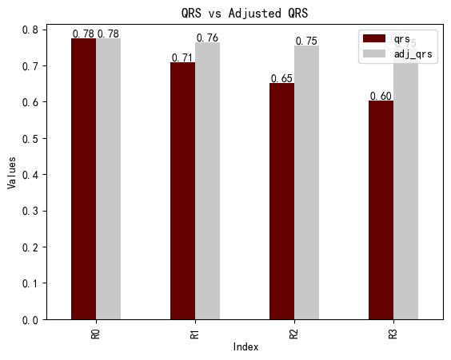
multi_adj_regulation_dict: Dict = {}
for lag in [0, 1, 2, 3]:
single_qrs: pd.DataFrame = qrs.fit(18, 600, n=lag, adjust_regulation=True)
hs300_df["signal"] = single_qrs["Signal"]
hs300_df["upperbound"] = 0.7
hs300_df["lowerbound"] = -0.7
multi_adj_regulation_dict[f"R{lag:d}"] = run_template_strategy(
hs300_df,
target_code,
RSRSStrategy,
strategy_kwargs={"verbose": False, "hold_num": 1},
)
multi_strategy_show_trade_stats(multi_adj_regulation_dict)
2024-10-29 16:42:16.090 | INFO | backtrader_utils.engine:load_data:119 - 开始加载数据...
2024-10-29 16:42:16.099 | SUCCESS | backtrader_utils.engine:load_data:134 - 数据加载完毕！
2024-10-29 16:42:17.042 | INFO | backtrader_utils.engine:load_data:119 - 开始加载数据...
2024-10-29 16:42:17.052 | SUCCESS | backtrader_utils.engine:load_data:134 - 数据加载完毕！
2024-10-29 16:42:18.097 | INFO | backtrader_utils.engine:load_data:119 - 开始加载数据...
2024-10-29 16:42:18.107 | SUCCESS | backtrader_utils.engine:load_data:134 - 数据加载完毕！
2024-10-29 16:42:19.050 | INFO | backtrader_utils.engine:load_data:119 - 开始加载数据...
2024-10-29 16:42:19.060 | SUCCESS | backtrader_utils.engine:load_data:134 - 数据加载完毕！
| R0 | R1 | R2 | R3 | |
|---|---|---|---|---|
| Trade Stats | Trade Stats | Trade Stats | Trade Stats | |
| Annual return | 18.15% | 18.36% | 17.02% | 16.27% |
| Sharpe ratio | 1.01 | 1.02 | 0.95 | 0.91 |
| Max drawdown | 47.89% | 47.89% | 50.24% | 51.14% |
| Trade Num | 68 | 69 | 65 | 67 |
| Win Rate | 55.88% | 59.42% | 52.31% | 55.22% |
| Win Loss Ratio | 1.91 | 1.70 | 2.12 | 1.91 |
对信号项进行改造#
在信号项中 𝑠𝑡𝑑(ℎ𝑖𝑔ℎ) 与 𝑠𝑡𝑑(𝑙𝑜𝑤) 明显是符合择时逻辑的关键部分，𝑠𝑡𝑑(ℎ𝑖𝑔ℎ) 可以 理解为阻力变量的波动，波动越大，说明投资者对阻力的分歧越大，阻力的强度越低； 同理 𝑠𝑡𝑑(𝑙𝑜𝑤) 则是支撑变量的波动，波动越大，说明支撑的强度越低。那么，在惩罚项起关键作用的 𝑐𝑜𝑟𝑟(ℎ𝑖𝑔ℎ, 𝑙𝑜𝑤) 在信息项中是否在信息项中也是必要成分？还是说可 以将其删去以精简指标公式？我们不妨测试下把其删去对择时能力带来的影响。
在全样本净值测试中，精简指标择时模型整体的净值走势与原始模型有些相似，也有较 显著的择时能力。在下表统计数据中，可以看出虽然在开仓胜率及最大回撤上稍有些改 善，但整体择时效果相比原始指标择时策略还是有明显下滑。年化收益从原始指标的 10.72% 降到 8.92%；夏普比率从 0.78 降至 0.6；平均盈亏比从 1.73 降至 1.29。
from src.plotting_utils import get_strategy_cumulative_return,get_strategy_return
target_code: str = "000300.SH"
fields: List[str] = ["code","open", "high", "low", "close", "volume"]
hs300_df: pd.DataFrame = daily.query("code==@target_code")[fields].copy()
hs300_df["upperbound"] = 0.7
hs300_df["lowerbound"] = -0.7
qrs: QRSCreator = QRSCreator(low_df[target_code], high_df[target_code])
params: Dict = {
"simple_signal": True,
"qrs": False,
}
multi_strategy_dict: Dict = {}
for name, p in params.items():
signal_df = qrs.fit(18, 600, n=2, adjust_regulation=False, use_simple_beta=p)
if name.find("simple") != -1:
hs300_df["signal"] = qrs.zscore_simple_beta["Signal"]
else:
hs300_df["signal"] = qrs.zscore_beta["Signal"]
multi_strategy_dict[name] = run_template_strategy(
hs300_df.dropna(subset=["signal"]),
target_code,
RSRSStrategy,
strategy_kwargs={"verbose": False, "hold_num": 1},
)
2024-10-29 16:42:20.053 | INFO | backtrader_utils.engine:load_data:119 - 开始加载数据...
2024-10-29 16:42:20.061 | SUCCESS | backtrader_utils.engine:load_data:134 - 数据加载完毕！
2024-10-29 16:42:20.937 | INFO | backtrader_utils.engine:load_data:119 - 开始加载数据...
2024-10-29 16:42:20.945 | SUCCESS | backtrader_utils.engine:load_data:134 - 数据加载完毕！
cum_returns: pd.DataFrame = pd.concat(
{
name: get_strategy_cumulative_return(strat, 1)
for name, strat in multi_strategy_dict.items()
}
).unstack(level=0)
first_date: pd.Timestamp = hs300_df["signal"].first_valid_index()
cum_returns["benchmark"] = (
hs300_df.loc[first_date:, "close"] / hs300_df["close"].loc[first_date]
)
cum_returns.plot(color=["IndianRed", "Crimson", "darkgray"], figsize=(16, 4)).axhline(
1, color="black", lw=0.5
)
<matplotlib.lines.Line2D at 0x29c0f941f10>
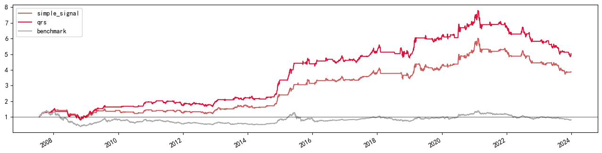
multi_strategy_show_trade_stats(multi_strategy_dict)
| simple_signal | qrs | |
|---|---|---|
| Trade Stats | Trade Stats | |
| Annual return | 8.92% | 10.72% |
| Sharpe ratio | 0.60 | 0.70 |
| Max drawdown | 42.35% | 47.87% |
| Trade Num | 68 | 68 |
| Win Rate | 60.29% | 55.88% |
| Win Loss Ratio | 1.29 | 1.73 |
动态上下边界#
研报中的开仓阈值设置S为0.7,大致是信号\(\pm 1\)标准差左右,如果边界设置为过去1年的标准差效果会怎样呢？如下可知，动态阈值年化为8.48%比固定阈值年化低1%左右,但回撤从固定阈值的50.21%降低到了动态阈值的39.30%左右。
target_code: str = "000300.SH"
qrs: QRSCreator = QRSCreator(low_df, high_df)
signal_df: pd.DataFrame = qrs.fit(18, 600, adjust_regulation=True)
ohlc_and_signal: pd.DataFrame = concat_ohlc_vs_signal(daily, signal_df)
dynamic_ul_dict: Dict = {}
def get_dynamic_bound_result(
target_code: str, ohlc_and_signal: pd.DataFrame, window: int
):
"""
根据给定的目标代码和OHLC数据，计算动态上下界并运行策略。
:param target_code: 目标股票代码
:type target_code: str
:param ohlc_and_signal: 包含OHLC数据和信号的DataFrame
:type ohlc_and_signal: pd.DataFrame
:param window: 滚动窗口大小
:type window: int
:return: 策略运行结果
:rtype: StrategyResult
"""
df: pd.DataFrame = ohlc_and_signal.query("code==@target_code").copy()
rolling_avg: pd.Series = df["signal"].rolling(window).mean()
rolling_std: pd.Series = df["signal"].rolling(window).std()
df["upperbound"] = rolling_avg + rolling_std
df["lowerbound"] = rolling_avg - rolling_std
strat = run_template_strategy(
df.iloc[window-1:], target_code, RSRSStrategy, strategy_kwargs={"verbose": False, "hold_num": 1}
)
return strat
def get_fixed_bound_result(target_code: str, ohlc_and_signal: pd.DataFrame):
"""
获取固定边界结果
参数:
target_code (str): 目标代码。
ohlc_and_signal (pd.DataFrame): 包含OHLC数据和信号的DataFrame。
返回:
pd.DataFrame: 策略运行结果。
"""
df: pd.DataFrame = ohlc_and_signal.query("code==@target_code").copy()
df["upperbound"] = 0.7
df["lowerbound"] = -0.7
strat = run_template_strategy(
df, target_code, RSRSStrategy, strategy_kwargs={"verbose": False, "hold_num": 1}
)
return strat
dynamic_ul_dict["fixed_bound"] = get_fixed_bound_result(target_code, ohlc_and_signal)
dynamic_ul_dict["dynamic_bound"] = get_dynamic_bound_result(
target_code, ohlc_and_signal, 252
)
2024-10-29 16:42:22.451 | INFO | backtrader_utils.engine:load_data:119 - 开始加载数据...
2024-10-29 16:42:22.460 | SUCCESS | backtrader_utils.engine:load_data:134 - 数据加载完毕！
2024-10-29 16:42:22.878 | INFO | backtrader_utils.engine:load_data:119 - 开始加载数据...
2024-10-29 16:42:22.888 | SUCCESS | backtrader_utils.engine:load_data:134 - 数据加载完毕！
returns: pd.DataFrame = pd.concat(
{name: get_strategy_return(start) for name, start in dynamic_ul_dict.items()}
).unstack(level=0)
returns: pd.DataFrame = returns.loc[returns["dynamic_bound"].first_valid_index() :]
ep.cum_returns(returns, 1).plot(
figsize=(16, 4), color=["IndianRed", "Crimson"], title="动态上下界与固定上下界"
).axhline(1, color="black", lw=0.5)
<matplotlib.lines.Line2D at 0x29c0f34c8e0>
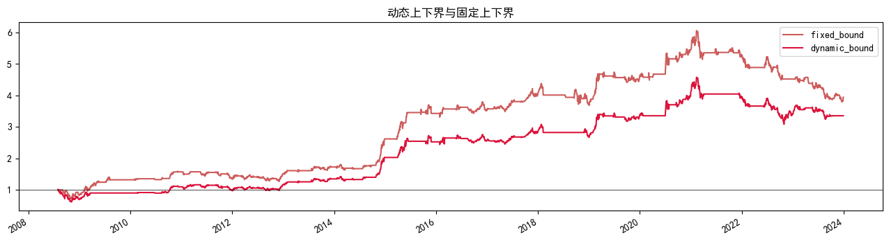
multi_strategy_show_trade_stats(dynamic_ul_dict)
| fixed_bound | dynamic_bound | |
|---|---|---|
| Trade Stats | Trade Stats | |
| Annual return | 9.49% | 8.48% |
| Sharpe ratio | 0.63 | 0.59 |
| Max drawdown | 50.21% | 39.30% |
| Trade Num | 65 | 47 |
| Win Rate | 52.31% | 46.81% |
| Win Loss Ratio | 1.89 | 3.16 |